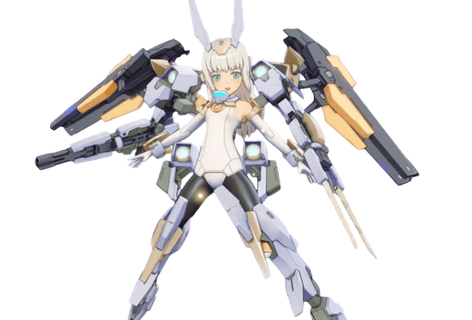

基本データ
- コスト
- 2.5
- 体力
- 未入力
- 赤ロック
- 34
- 動画
- 登録動画

Move Table
| 射撃 | 名称 | 弾数 | 威力 | 備考 |
|---|---|---|---|---|
| メイン射撃 | セグメントライフル | 7 | 210 | 普通のBR フルバーストモード中メイン連動 |
| セグメントライフル・連動 | 90x2 | - | 肩のライフルからビームの追加攻撃 | |
| サブ射撃 | 一斉射撃 | 1 | 453 | ミサイル一斉発射。フルバーストモード中：発射弾数増 |
| 後サブ射撃 | レールガン | 1 | 332 | 轟雷譲りの爆風つき射撃 |
| 後格闘 | セグメントライフル・照射 | 1 | 650 | ダメージ確定までが非常に早い照射 フルバーストモード中：攻撃判定拡大 |
| サブ格闘 | ブーストフライト | 1 (2) | - | レバー入れで自由飛行できる特殊移動 フルバーストモード中：弾数+1 フルバーストモード中サブ格連動 |
| セグメントライフル【ミサイル】 | 75~ | - | 移動開始時にミサイル発射 | 射撃派生 |
| セグメントライフル・急止 | 210~378 | - | 正面と時間差で左右に射撃 | |
| 格闘派生 斬り抜け | 270 | - | スタン属性の切り抜け | 格闘派生サブ格派生 |
| ブレード・追撃 | 552 | - | 各種格闘サブ格闘派生と同一 | サブ格闘中 |
| サブ格闘 | バク宙 | - | - | サブ格とその派生(格闘派生以外)を宙返りでキャンセル 宙返りから更に以下へ派生可能。2凸で誘導切り付与 |
| 射撃派生 ガトリングガン | 424 | - | スティレット譲りのマシンガン | |
| 格闘派生 突撃 | 604 | - | 射撃バリアつき突撃から3段格闘 | |
| 後格闘派生 下斬り | 444 | - | 接地判定付きピョン格 | |
| 後サブ格闘 | フルバーストモード | 100 | - | 時限強化 |
| 格闘 | 名称 | 入力 | 弾数 | 威力 | 備考 |
|---|---|---|---|---|---|
| 通常格闘 | ブレード | NN | - | 563 | 赤ロック範囲ギリギリまで吹き飛ばす サブ射派生 |
| 一斉射撃・追撃 | - | N→サブ射 | |||
| NN(9)→サブ射 | - | - | 748 | ||
| 777 | - | 火力派生 | サブ格派生 | ||
| ブレード・追撃 | - | N→サブ格 | |||
| NN(9)→サブ格 | - | - | 496 | ||
| 646 | - | 切り抜けながら打ち上げるカット耐性派生 | |||
| 前格闘 | ブレード・投擲 | 前 | - | 326 | ダウン拾い有、赤ロック範囲外まで投げ飛ばす |
| 横格闘 | ブレード・機動 | 横N | - | - | 495 サブ射派生 |
| 一斉射撃・追撃 | - | 横→サブ射 | |||
| 横N(1)→サブ射 | - | - | 733 | ||
| 749 | - | N格と同様 | サブ格派生 | ||
| ブレード・追撃・ | - | 横→サブ格 | |||
| 横N(1)→サブ格 | - | - | 481 | ||
| 591 | - | N格と同様 | |||
| バーストアタック | 名称 | - | 威力 | ||
| バーストアタック | 一斉射撃・強化 | - | 435/390 | ミサイル一斉発射+時限換装。ダメージのムラが激しい |